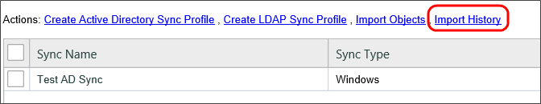
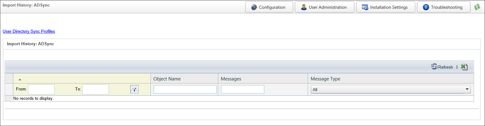
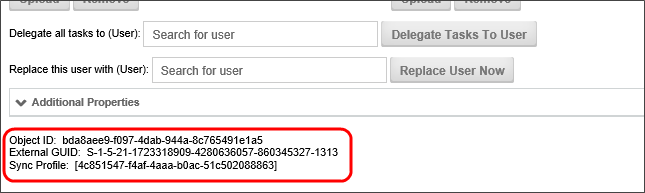

This utility can be run manually, or scheduled to perform an automatic synchronization. To perform the synchronization, navigate to User Administration à User Directory Synchronization. Each sync configuration is a profile. You can create many profiles to sync specified users or groups of users. These profiles will be saved to the database so you may run them at any time. You may also create a profile by selecting the Create AD Sync Profile link.
Each profile will, after running display when the synchronization was last performed, and the result of the synchronization.
Configure the profile by selecting the appropriate values for the settings displayed. Ensure that you have selected OK to save the settings to the profile.

The following properties are configurable in the Active Directory Sync Profile.
Sync Name: The name of the profile that will appear in the list of available profiles on the User Directory Synchronization page.
Description: An optional, brief description of the profile's purpose.
AD Domain: The Active Directory Domain with which you wish to synchronize.
AD Username: The Active Directory User name that has permissions to pull data from the domain with which you wish to synchronize.
Password: The password associated with the AD Username.
Phone...Custom Number: A list of fields that can be mapped to Active Directory fields to store the relevant data contained in Active Directory.
Secure: This option causes the synchronization to use a secure connection (SSL).
Test Connection Settings: This button, when clicked, will make a test connection to the specified AD Domain to ensure the connection works properly.
Sync Objects: A series of check boxes that enable you to choose which object types to sync.
Limit Users to Group: This optional value will limit the users to sync to only the users within the specified group.
Limit Groups to Group: This optional value will limit the groups to sync to only the groups within the specified group.
Add Objects to Partitions: This optional dropdown value lists the partitions that exist on the installation, and enables you to specify the partition to which to add the synchronization objects.
Add Users to Groups: This optional value specifies to which Process Director groups to add the synchronization users.
Do Not Disable: This option indicates that the synchronization will add new objects from an AD Sync, but will NOT disable already existing users or groups which the sync does not find.
Remove Users From Groups: This option indicates that the synchronization will remove users from groups in Process Director when they are removed from the AD group.
Add as Day Pass Users: This option indicates that the synchronized users should be added as licensed day pass users. This option is only relevant to installations licensed for user passes.
Debug Mode: This option runs the synchronization in "Debug Mode" - providing more verbose logging.
Test Mode: This option causes the synchronization to fetch all the object to synchronize without adding them to Process Director.
Interactively Run This Sync Profile: Clicking this button will manually run the Synchronization. By default, the Sync will run in Test Mode, so you will need to be sure to uncheck the Test Mode property to run an actual sync.
To execute a profile, navigate to the User Directory Synchronization page and select the Run command from the profile you would like to run. This will display the AD Sync Run page. The AD Sync Run page displays the profile configuration with the option of changing your settings for that run instance.
If the synchronization occurs successfully, you will see the number of users and groups that were synchronized.
To automatically schedule the profile to run at regular intervals (for example, every night at midnight) use the Microsoft Windows Scheduled Tasks utility. This utility enables you to schedule and test commands executed on a regular basis.
Do not schedule IEXPLORE.EXE because the web browser will never close. Rather, use the bputil.exe command to run the web page. Process Director has created this path for you. Navigate the AD Sync Run Page and copy and paste the URL under Directory Connection to the Windows Scheduler.

For example, enter this command in the “Run” dialog box to schedule the synchronization:
where PATH is the installation directory for Process Director (e.g. c:\Program Files\BP Logix\Process Director\). Enter the appropriate credentials in the Windows Scheduler when prompted. Use the “Schedule” tab to set the times to run the command. Consult the Microsoft help for more information on this utility.
 You must enclose the URL to ad_sync.asp in double quotes.
You must enclose the URL to ad_sync.asp in double quotes.AD users will be created in the Process Director database when synchronization is performed and when the user logs in. The user ID, display name, email address and organization hierarchy will be kept in sync. If a user is renamed in AD it will be reflected in the Process Director database during a login or a synchronization operation. If a user is deleted in AD, the user will be disabled in the Process Director database. It is recommend that the user ID be left as disabled instead of deleting it so that the user history is maintained (e.g. processes they participated in, documents they modified, etc.).
The integration will synchronize the AD groups. These will be created as groups in Process Director. When using AD groups, if you delete or rename groups in AD they will be removed from the Process Director database. When renaming an AD group, you should rename it in the Process Director User Administration Group section first. This is not required for AD users.
For more information on User or Group synchronization, please see the topic on User Directory Synchronization.
Installations that use the Auditing component have access to a Synchronization log that is saved to the database when an Active Directory synchronization is run. The link to this page is available from the Import History action link at the top of the User Directory Synchronization page.

This link opens a searchable log page to view all of the log events generated during a synchronization.
Please be aware that larger organizations may have—depending on the size and frequency of the synchronizations—a huge number of log entries, which can return a massive amount of data and degrade system performance. The number of records returned, however, can be restricted by setting the nMaxADSyncLogEvents and fKeepADSyncInfoLogs custom variables.

A number of filters are available on the page to assist you with searching for specific entries.
When you configure the options, clicking the Refresh button will reload the log files that match your conditions. An Export to CSV button is also available to export the log results to a CSV file that can be opened in Microsoft Excel.
You can return to the AD Synchronization page by clicking the User Directory Sync Profiles action link.
When a user is managed via an Active Directory Synchronization, some extra information about the user is available at the bottom of the user's account profile.

The Object ID is the user's internal UID in Process Director. The External GUID is the user's SID in Active Directory, which is copied over to Process Director, and placed in the sExternalGuid field of the record in tblUser for this user, and links the user's Process Director ID to the Active Directory ID for this user. Finally, the Sync Profile is the ID of the Synchronization Profile that is used to synchronize this user.
When a user is synchronized, once, they are permanently associated with a specific Active Directory account and Sync Profile.
This association can be lost under some circumstances:
In such cases you may want to reassociate the same Process Director user with the changed AD Account, so that you can maintain continuity with the Process Director user's different profiles or AD Accounts.
In such cases, the solution we would recommend is creating an admin form that allows a user ID and new AD GUID or Profile ID to be entered and have it update the tblUser database table. This form would update the Process Director sExternalGUID and/or oADID fields in the table tblUser within the Process Director database for the affected user. The form can save the original GUIDs from tblUser in the form instance, just in case there was a mistake made. Also, that would provide an audit trail of changes. You can then delete the new user from Process Director.
This is an advanced solution, so you should use due caution in implementing it. We very strongly advise you to contact us for Direct Assistance in creating this solution unless you are absolutely sure you know how to implement it.